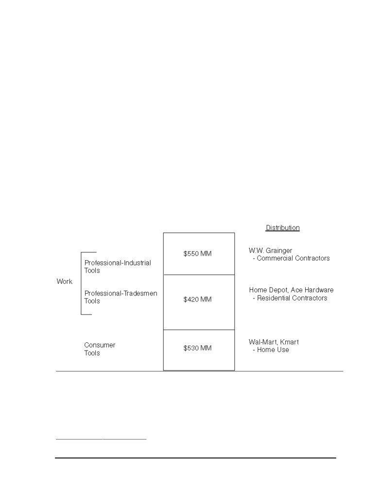
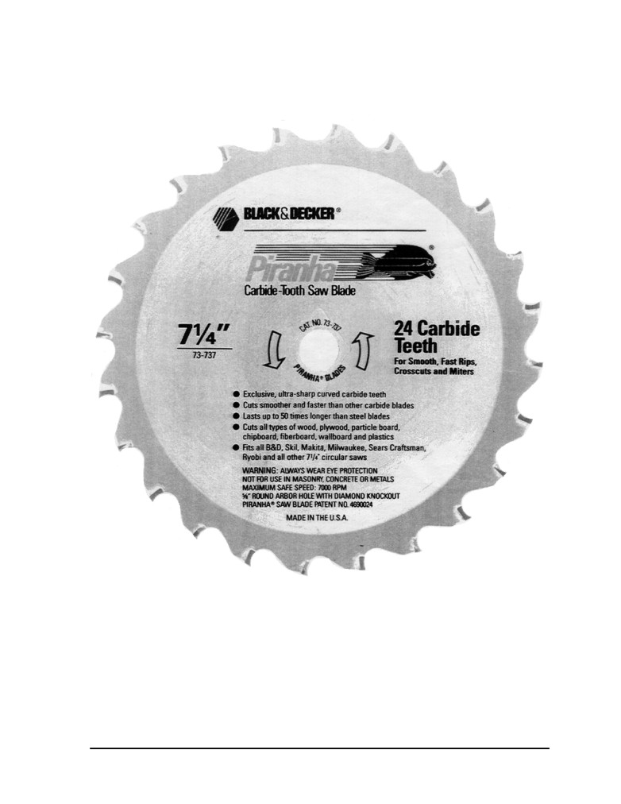

Harvard Business School
9-595-057
Rev. March 30, 2001
The Black & Decker Corporation (A):
Power Tools Division
Joe, I like you guys. But, look, I give Makita 10 feet of space. I give you 10 feet of
space. They outsell you 8 to 1. What are we going to do about that?
In January 1991, statements like this no longer surprise Joseph Galli. Black & Decker’s (B&D)
vice president of sales and marketing for power tools had heard similar sentiments expressed by
many trade accounts. Makita Electric of Japan had practically taken over the professional power tools
for tradesmen business since it entered the United States market a decade ago. “Tradesmen” was one
of the three major segments of the power tools business—the others being
“Consumer” and
“Industrial.”
“Consumer” represented “at home” use, while both “Tradesmen” and “Industrial”
covered professional users. The distinguishing characteristic of the Tradesmen segment was that
these buyers, such as a carpenter, bought tools for their own use on a job site. In Industrial, the buyer
was generally a corporation purchasing tools for use by employees. By late 1990, Makita’s success in
the Professional-Tradesmen segment was such that it held an 80% share in cordless drills, the single
largest product category, and a 50% segment share overall. B&D had virtually created the portable
power tools business in the United States beginning in the early 1900s. While it maintained the #1
market share position in the Consumer and Professional-Industrial segments, its entry in the
relatively new Professional-Tradesmen segment held only about a 9% share.
The trade was asking for advertising allowances and rebate money on B&D’s Tradesmen
products and profitability in this segment was near zero. B&D’s senior management resolved to put
an end to this “no win” game, and Galli set about developing and gaining corporate support for a
viable program to challenge Makita for leadership in this segment. He could not help but see the
irony of a 9% Tradesmen segment share and no profitability against the results of two recent research
studies: one showing B&D to be among the powerful brand names in the world, and the second
establishing B&D’s professional tools to be the highest quality in the industry.
Black & Decker
In 1910, Duncan Black and Alonzo Decker, Sr., started a machine shop and, in 1917, received
a patent on the world’s first portable power drill with pistol grip and trigger switch; 73 years after
receiving its first patent, B&D was the world’s largest producer of power tools, power tool
accessories, electric lawn and garden tools, and residential security hardware. Headquartered in
Professor Robert J. Dolan prepared this case as the basis for class discussion rather than to illustrate either effective or
ineffective handling of an administrative situation. Certain non-public data have been disguised.
Copyright © 1995 by the President and Fellows of Harvard College. To order copies or request permission to
reproduce materials, call 1-800-545-7685, write Harvard Business School Publishing, Boston, MA 02163, or go to
used in a spreadsheet, or transmitted in any form or by any means—electronic, mechanical, photocopying,
recording, or otherwise—without the permission of Harvard Business School.
1
595-057
The Black & Decker Corporation (A): Power Tools Division
Towson, Maryland, B&D’s sales reached $4.8 billion in 1990, with nearly 50% of product revenues
from outside the United States. Alonzo G. Decker, Jr., was honorary chairman of the company and a
member of the board of directors. He had been chairman of the board and chief executive officer
from 1968 to 1975. Prior to his becoming CEO, the CEO post had always been held by his father or
co-founder Black. From its roots in power tools, B&D began a move “from the garage to the house”
in 1979 with the introduction of the very successful Dustbuster® hand-held vacuum. This “into the
house” thrust led to the purchase of General Electric’s Housewares Division in 1984 for $212 million.
As part of the sale agreement, B&D could use General Electric’s name on products only until 1987.
Nolan Archibald, a Harvard Business School graduate and a former group president at
Beatrice, became president and CEO in 1986. The early 1980s had been volatile years at B&D. It
began the decade with a 19% net revenue increase to $1.2 billion in 1980, but sales stagnated at this
level through 1983. In 1985, with net revenues at $1.7 billion, B&D posted a
$215.1 million
restructuring cost and a $158.4 million loss. For the 5-year period from 1981 through 1985, the
company lost money. B&D’s $2.8 billion acquisition of Emhart Corporation in 1989 more than
doubled B&D’s revenues and brought new strong brands, including Kwikset® locks and Price Pfister®
faucets, but raised the company’s long-term debt to $4.2 billion, representing about 84% of
total
capital. Figure A shows the growth in B&D sales and net income since Archibald became CEO.
Figure A Black & Decker Revenues and Operating Income, 1986-1990
$ in Billions
$ in Millions
6
550
5.5
500
5
450
4.5
400
350
4
300
3.5
250
3
200
2.5
150
2
100
1.5
50
1
1
1986
1987
1988
1989
1990
1986
1987
1988
1989
1990
The five largest product groups and their percentage of B&D’s 1990 sales were:
• Power Tools and Accessories
29%
• Household Products
15%
• Information Systems and Services
11%
• Outdoor Products
9%
• Security Hardware
9%
2

The Black & Decker Corporation (A): Power Tools Division
595-057
Household products included hand-held vacuums, irons, mixers, food processors and
choppers, coffee makers, and toasters and toaster ovens. The well-known Dustbuster and
Spacemaker® (under-the-cabinet appliances) brands were part of this group. The B&D franchise was
especially strong in cordless vacuums, irons, and toaster ovens, each holding over a 50% market share
in the United States. In 1990, 29 new household products were introduced, including the Power Pro™
Dustbuster® heavy duty cordless vacuum. The household products line was heavily supported with
media advertising.
The B&D name enjoyed substantial equity in both the United States and Europe. An
independent survey of 6,000 brands showed Black & Decker’s brand-strength ranking to be #7 in the
United States and #19 in Europe.1 This put Black & Decker in the company of Coca-Cola, Campbell’s,
Walt Disney, Pepsi-Cola, Kodak, NBC, Kellogg’s, McDonald’s, and Hershey—the other firms
rounding out the U.S. top ten.
Power Tools Market
In 1990, portable power tools in the United States was a $1.5 billion market. Products ranged
from an electric screwdriver for the consumer who might use it once a year at home to heavy-duty
miter saws used continually throughout the day at construction sites. Segmentation of the market
was as shown in Figure B.
Figure B Segmentation of the U.S. Power Tools Market
Nonprofessional users accounted for $530 million or 35% of the market. In this Consumer
segment, consumers bought tools at mass merchants, such as Wal-Mart and Kmart, and hardware
stores for their own home use. The “for work” market was divided into a Professional-Industrial
segment and a Professional-Tradesmen segment. The $550 million Professional-Industrial segment
was made up primarily of commercial contractors working on large projects (e.g., office buildings,
1Landor Associates Survey.
3
595-057
The Black & Decker Corporation (A): Power Tools Division
bridges, etc.) and company assembly lines (e.g., automobile plants). In this segment, distributors (of
which W.W. Grainger of Skokie, Illinois, with over 300 branch offices, was by far the largest) played
an important role in providing technical expertise and service. For a given job, the distributor could
both specify the contractor’s tool requirements and recommend specific brands. Grainger stocked
more than 32,000 items to provide prompt delivery. In the Professional-Industrial segment, tools
were typically purchased and owned by the company rather than the individual users.
The Professional-Tradesmen segment was targeted largely at tradesmen such as electricians,
plumbers, carpenters, framers, roofers, and general remodelers working in residential construction.
These tradespeople were expected to show up at the job site with their own necessary tools of the
trade in working condition. These buyers tended to patronize newly emerging retail distribution
channels including home centers such as The Home Depot and Lowe’s, in addition to the traditional
hardware stores, such as Ace. While the smallest of the three segments in 1990, at $420 million (28%),
Professional-Tradesmen was growing fastest at 9% compared with a 7% growth rate for Consumer
and no growth for Professional-Industrial. Some “heavy do-it-yourselfers” bought tools in the
Professional-Tradesmen segment, but this segment primarily comprised people who made a living
with their tools.
B&D participated in all three segments. Black & Decker®-brand power tools held nearly a
30% share of the U.S. market overall.2 To serve these segments, B&D offered three separate lines and
brand designations all under the Black & Decker family name, as follows:
Approximate
B&D
B&D
U.S. Market
Segment
Segment
Segment
Brand Logo
Product Color
Share 1990
Revenues 1990
Professional-Industrial
Charcoal Grey
20%
$110 MM
• Size = $550MM
Professional-Tradesmen
Charcoal Grey
9%
$35 MM
• Size = $420MM
Consumer
Black
45%
$250 MM
• Size = $530MM
In the Professional-Industrial segment, B&D’s share was near parity with Milwaukee Electric
of Brookfield, Wisconsin. Founded in 1924, Milwaukee was a privately held firm, selling only in the
high end of the market at a rate of approximately $200 million per year worldwide. The second tier
suppliers in the Professional-Industrial segment were Bosch, Porter Cable, and Makita. The very
knowledgeable purchase decision influencers in the Professional-Industrial segment viewed B&D as
offering high-quality, differentiated products and excellent service. At the other end of the
performance spectrum, in the Consumer segment, B&D’s brand recognition and image helped it
attain the #1 position in the marketplace with nearly a 50% share over suppliers such as Skil,
Craftsman, Wen, and various private label products.
2In addition, it manufactured some professional power tools under the Craftsman label for Sears, which held an
additional 4% of the Professional-Tradesmen segment.
4
The Black & Decker Corporation (A): Power Tools Division
595-057
B&D’s strengths in the Professional-Industrial and Consumer segments did not transfer to the
Professional-Tradesmen segment, where the approximate share positions in 1990 were as shown in
Table A.
Table A Power Tools, Professional-Tradesmen
Approximate Segment Shares, 1990
Makita
~50%
Milwaukee
~10%
Black & Decker
~9%
Ryobi
~9%
Skil
~5%
Craftsmana
~5%
Porter-Cable
~3%
Bosch
~3%
aManufactured in part by B&D and marketed by Sears.
Three product types—drills, saws, and sanders—represented nearly 80% of the total sales in the
Professional-Tradesmen segment. The top three manufacturers offered broad product lines at
approximately 175 SKUs each. Since its entry into the market in 1978, Makita had staked out
leadership positions in virtually all products and distribution types within the Professional-
Tradesmen segment. Exhibit 1 shows approximate shares for Makita, Milwaukee, and B&D for the
largest categories in the segment. Exhibit 2 shows shares of Makita and B&D by the five major outlet
types:
(i) Two-Step (sales through distributors to independent retailers, such as Ace and ServiStar),
(ii) Home Centers, (iii) Warehouse Home Centers, (iv) Membership Clubs, and (v) Farm Outlets.
Professional-Tradesmen revenues of approximately $35 million in 1990 for B&D translated
into about $3 million in operating income. Gross margins ran about 35%, but SG+A costs were about
25%.
These numbers had become even more vivid for Galli in a recent Monday morning
conversation with his boss, Gary DiCamillo, B&D’s president of Power Tools for the United States,
who recounted this story:
Joe, yesterday, I stopped by that new Home Depot. It was a nice afternoon;
lots of people around. They had one of those woodworking guys out on the sidewalk
giving demonstrations for a couple of hours. He was using all Skil saws, and he was
just packing up to go home when I came by at about 4 o’clock.
I said to him
“What do you think of the Skil saws?” “Pretty good,” he said.
So, I said,
“Who else do you like?” He said “Oh, Milwaukee makes a nice
reciprocating saw; Ryobi’s got some okay things.” “What about Makita?” I said. He
said, “Oh, they’re okay—they’re all pretty good really—you just have to stay away
from that Black & Decker!”
5
595-057
The Black & Decker Corporation (A): Power Tools Division
Black & Decker and the Professional Segment Buyer
While the “just got to stay away from that Black & Decker” view was perhaps extreme, Galli
understood that B&D’s strength as a consumer brand was not necessarily beneficial for the
Professional-Tradesmen segment. Some tradespeople viewed all B&D products as for use at home
rather than on the job; and, conversely, there had been instances of a B&D product designed for at
home use being subjected to the demands of the job site and failing.
The typical plumber, electrician, or general remodeler working in residential construction
had about $3,000 invested in 10 or so “tools-of-the-trade.” He or she bought tools when a
replacement was needed, spending on average $1,000 per year. Tools and their performance were a
constant topic of conversation at the job site. Generally, tradespeople were satisfied with the tools
available—the perception being that Makita provided a good baseline option in all major categories,
and other suppliers had particular product strengths, e.g., Skil in circular saws.
As noted above in Exhibit 2, this buyer bought most frequently in independently owned
stores served by distributors, i.e., the Two-Step in Exhibit 2. However, the Home Centers noted in
Exhibit 2 were growing in importance. For example, the largest single outlet of Professional-
Tradesmen tool sales in 1990 was The Home Depot at approximately $5 million; second was Home
Club at $3.5 million, compared to the largest of the Two-Steps, Ace and ServiStar, at $2 million each.
The Home Depot was the largest of the rapidly growing collection of home improvement chain stores.
With 145 stores and $3.8 billion in 1990 sales, The Home Depot’s strategy was to stock 30,000 items in
a 100,000 square foot location, with prices about 30% less than the traditional hardware store, while
also providing superior customer service. Makita’s rise to marketplace dominance was aided by the
rapid development of this new type of distribution.
B&D’s research on tradespeople’s perceptions of suppliers’ quality showed four tiers in the
marketplace, as shown in Figure C.
Figure C Brand Perceptions of Professional-Tradesmen Segment Buyers
Highest
Lowest
—Makita
—Bosch
—Black & Decker
—Wen
—Milwaukee
—Hitachi
—Ryobi
—Porter Cable
—Skil
—Panasonic
—Craftsman (Sears)
Both Milwaukee and Makita priced at premiums over B&D, averaging 10% and 5%,
respectively. Despite the price premium over B&D, Makita’s prices on some products were less than
half of what the product sold for in Makita’s home market, Japan, where Makita was #2 in market
share to Hitachi.
While Makita’s position with tradespeople was strong, retailers were not uniformly positive
toward Makita. Some regarded it as “arrogant and dictatorial.” Makita offered no channel
protection, selling the same products throughout a range of outlets including the discount oriented
Membership Clubs, which B&D had decided not to include among its distributors of Professional-
Tradesmen tools (see Exhibit 2). Some believed Makita to be “trading-down” its offerings by, among
other things, positioning them as appropriate for Father’s Day giving.
While no tradesperson would explicitly note “product color” as a key attribute in the
purchase decision, color was generally regarded as a significant product differentiator. Consumer
tool manufacturers had largely followed B&D’s 1981 lead of making consumer tools black or charcoal
6
The Black & Decker Corporation (A): Power Tools Division
595-057
grey. B&D’s policy was to use black as its consumer grade color and charcoal grey for its
Professional-Industrial and Professional-Tradesmen grades. Competing brands of professional tools
were more highly differentiated in color, as shown in Figure D.
Figure D Color Differentiation: Professional End Users
• Makita - Teal
• Milwaukee - Red
• Bosch - Dark
Professional
• Hitachi - Green
Grade
• Black and Decker
- Charcoal Grey
Black/Charcoal Gre y
Consumer
Grade
• Black and Decker
• Wen
• Craftsman
• Private Label
• Skil
Products
Black & Decker Product Research
Product development had been a B&D focus since 1985 and B&D tools were highly regarded
in the demanding Professional-Industrial segment, so Galli believed that the source of B&D’s share
problem in the Professional-Tradesmen segment was not inherent product quality. This belief was
tested in two ways. First, B&D conducted laboratory tests on its own and competitive products to
assess performance, reliability, and durability. Figure E summarizes the results for the 14 major
Professional-Tradesmen products. B&D’s offerings were characterized on a scale ranging from
weak/undeveloped to competitive to leadership.
Second, B&D did extensive field tests. All identifying marks and colors were removed from
products (both B&D and competitors). The products were then used in actual work situations for one
month. Users provided comments on product performance and their interest in buying the product
when a replacement was needed. This user testing supported the findings of the laboratory tests of
Figure E, i.e., B&D’s product quality was very strongly competitive in the large majority of product
categories.
7
The Black & Decker Corporation (A): Power Tools Division
595-057
Research on Brand Awareness and Perceptions
Telephone surveys and B&D’s annual Image Study provided data on brand awareness,
relative perceived quality, and ratings on specific attributes. Overall awareness of the major brands
among the Professional-Tradesmen segment end users are shown in Table B.
Table B
1990 Total Awareness of Power Tool Suppliers
Among Tradespeople
Awareness
Black & Decker
98%
Hitachi
77%
Milwaukee
95%
Hilti
73%
Skil
93%
Porter Cable
67%
Makita
90%
Ryobi
50%
Bosch
87%
Respondents were also asked to state their level of agreement with the statement, “Brand X is
one of the Best.” The data on percentage of respondents “agreeing” or “strongly agreeing” with the
statement are in Table C.
Table C
”One of the Best” Agreement Data
Milwaukee
80%
Makita
67%
Black & Decker
44%
The Image Study provided the same agree/strongly agree data at the level of specific
attributes. In particular, Table D segregates those expressing a preference for Makita and those
expressing a preference for Milwaukee and compares perceptions of those brands to perceptions of
B&D.
Table D Percent Agreeing with the Statement
Those Who
Those Who
Prefer Makita
Prefer Milwaukee
Makita
B&D
Milwaukee
B&D
Makes High-Quality Tools
82%
51%
91%
43%
Makes Durable/Rugged Tools
71%
48%
91%
42%
Proud to Own
78%
43%
86%
36%
Easy to Get Service
44%
67%
68%
66%
Stands Behind Products
56%
61%
69%
52%
As Galli reflected on the research data, he recalled some of the comments made to him by two
tradesmen during site visits:
“. . . Black & Decker makes a good popcorn popper, and my wife just loves her Dustbuster,
but I’m out here trying to make a living . . .”
9
595-057
The Black & Decker Corporation (A): Power Tools Division
“. . . On the job, people notice what you’re working with . . . if I came out here with one of
those Black & Decker gray things, I’d be laughed at.”
Galli knew that a copycat strategy, e.g., paint it blue and spend some advertising dollars on a
“Black & Decker as appropriate for the tradesmen” theme, would not receive internal support. Three
options presented themselves:
Option 1. Harvest Professional-Tradesmen Channels
In this strategy, B&D would focus on the Consumer and the Professional-Industrial segments.
In the Professional-Tradesmen segment, the focus would be on profitability even at the expense of
market share.
Option 2. Get Behind Black & Decker Name with Sub-Branding
While there had been several half-hearted attempts to rebuild the B&D name in the
Professional-Tradesmen segment, they had not been successful. One new aspect which might offer
promise, though, was the sub-branding strategy, which had been so successful with the Spacemaker
line and which Galli had used earlier in his career in the accessories business. Specifically, he had
transitioned replacement saw blades from “Black & Decker” brand to “Piranha® by Black & Decker.”
(See Exhibit 3.) In 1990, B&D had introduced the Sawcat™and Super Sawcat™ circular saws with some
success. An intense sub-branding program could be developed in an integrated fashion.
Option 3. Drop the Black & Decker Name from the Professional-Tradesmen Segment
Galli imagined what internal reaction would be to such a proposal. Everyone had taken great
pride in the #7 “brand power” position of the B&D name. As one of his colleagues commented to
him, “Joe, it can’t make sense to pull the name of the creator of the power tools industry from a power
tool. You’d be saying that B&D can’t make it in power tools. Besides, if General Electric can put its
name on everything from jet engines to telephones, why can’t we?”
If he were to propose dropping the B&D name, he would need an alternative. One possibility
was to develop a new brand name free of any negative associations, similar to Toyota’s creation of the
Lexus brand. The other would be to use some other name already in B&D stable of brands. One of
these possibilities was the DeWalt® brand from a line of stationary woodworking equipment. DeWalt
was founded in 1918 and bought by Black & Decker in 1960. DeWalt was a leader in sales of large
radial arm saws permanently installed at lumber yards. While sales of DeWalt products had reached
$70 million annually at one time under B&D, the company had recently deemphasized the line due to
the amount of product liability exposure that came with large, stationary woodworking equipment.
The DeWalt name had never been used on a portable power tool.
The DeWalt name had been included in the awareness research described in Table B above.
It received a 70% awareness rating, and most of those who knew DeWalt were positively disposed to
it. Surprisingly, it had achieved an “Is One of the Best” agreement percent of 63% from tradesmen as
compared to B&D’s 44% (Table C). Further research on the DeWalt brand showed that 51% of
tradespeople would have some “purchase interest.” The “level of endorsement” by B&D impacted
the “purchase interest” score. Specifically:
10
The Black & Decker Corporation (A): Power Tools Division
595-057
Identified As
% Purchase Interest
• DeWalt
51%
• DeWalt-Serviced and Distributed by Black & Decker
58%
• DeWalt-Manufactured, Serviced and Distributed by Black & Decker
53%
Galli felt that any plan involving investing to build market share—Option 2 or Option 3—
would have to provide for a minimal objective of doubling B&D’s Professional-Tradesmen segment
share from under 10% to nearly 20% within three years, with major share “take-away” from Makita.
Operating income would be expected to improve steadily from under 10% to at least 12%. He also
knew that the Membership Clubs, which represented about 10% of segment sales for the industry
were and would continue to be off-limits. Thus, he would not be able to attack the 85% share Makita
held within that channel.
He wondered what type of reaction to expect from Makita if he pursued a “build share”
option. Finally, he considered the risk. On the one hand, B&D was not making much money in the
Professional-Tradesmen segment anyway, so financial risk was limited. On the other hand, there
might be implications for the other two segments and embarrassment in the retail channels.
One of the color options he was considering was a bold “Industrial Yellow”—a familiar job
site color associated with safety, but not yet used by any power tool brand. But, if the strategy was
not success, Galli could not think of anything good that could come from his product being the same
color as a lemon.
11
595-057
The Black & Decker Corporation (A): Power Tools Division
Exhibit 1
Market Shares of Professional-Tradesmen Tools by Product Type—1990
Approximate Shares
Approximate
Product
% of Market
Makita
Milwaukee
B&D
• Drills (30%)
- Cordless Drivers
16%
80%
<5%
<10%
- Corded
13%
50%
20%
25%
• Saws (35%)
- Circulara
14%
55%
15%
<10%
- Miter
11%
45%
-
15%
- Reciprocating
<10%
30%
30%
25%
- Jig
<5%
25%
15%
<10%
- Chop
<5%
50%
<5%
20%
• Sanders (>15%)
- Finishing
<10%
60%
<5%
<10%
- Beltb
<5%
20%
-
-
aSkil held approximately 20% of Circular Saws.
bRyobi held approximately 45% of Belt Sanders.
Exhibit 2
Market Shares of Professional-Tradesmen by Channel Type—1990
Approximate Shares Within
Channel Type
Approximate % of Professional
Makita
B&D
Segment Sales in This Channel
Share
Share
Two-Step
40%
55%
<10%
Home Centers
25%
45%
<10%
Warehouse Home Centers
15%
45%
20%
Membership Clubs
10%
85%
0%
Farm Outlets
5%
45%
15%
12

The Black & Decker Corporation (A): Power Tools Division
595-057
Exhibit 3
Piranha Sub-Brand
13